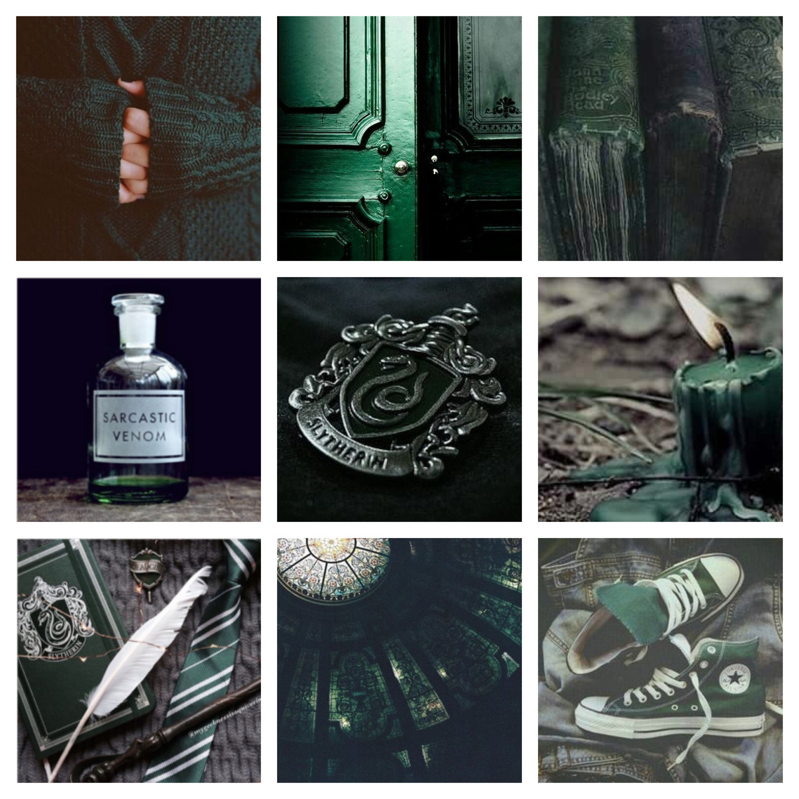

Advantages of house Slytherin

-
Ambition and Resourcefulness: Slytherins are known for their strong
ambition and resourcefulness, enabling them to set and achieve high
goals through strategic planning and determination.
-
Strategic Decision-Making: Unlike Gryffindors, who may act
impulsively, Slytherins are more calculated, carefully evaluating
potential outcomes before taking action, leading to more effective
decisions.
-
Adaptability and Self-Preservation: Slytherins excel in assessing
situations and adjusting their strategies to ensure favorable
outcomes, showcasing flexibility and resilience in various
circumstances.
Slytherins, of course, have quite a bit of “honor,” at least in their
own opinions. They have a lot of pride. They also are conscious of how
they are viewed, but in a rather “snobby” way. Instead of having a need
to prove them, they want to look sophisticated; thus, they have “honor”
in a more selfish way.